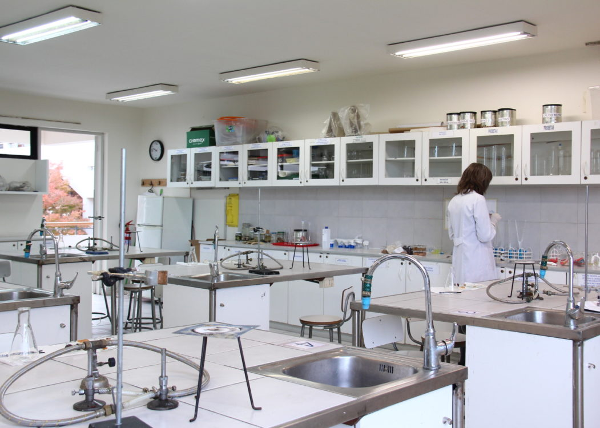
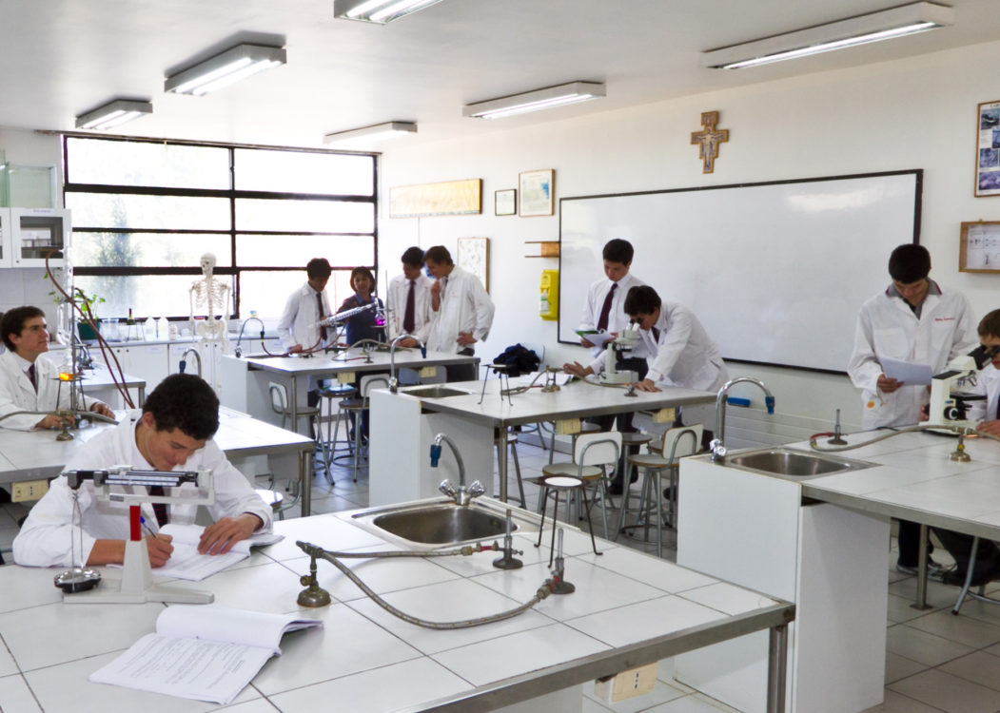

Laboratorios
En Elite Way School, entendemos la importancia de contar con instalaciones de vanguardia para proporcionar una educación integral y de alta calidad. Por ello, nuestros laboratorios de computación y de química están diseñados para ofrecer experiencias de aprendizaje prácticas y avanzadas.
Laboratorios de Computación: Equipados con las últimas tecnologías, nuestros laboratorios de computación cuentan con ordenadores de alta gama, software actualizado y acceso a internet de alta velocidad. Los estudiantes tienen la oportunidad de aprender programación, diseño gráfico y edición de imágenes mediante programas como Photoshop. Además, los laboratorios están configurados para facilitar el aprendizaje de diversas aplicaciones de software y hardware, preparándolos para los desafíos tecnológicos del futuro. Los espacios son amplios y organizados para asegurar que cada estudiante tenga acceso a una estación de trabajo individual, lo que fomenta una experiencia de aprendizaje concentrada y personalizada.
Laboratorios de Química: Nuestros laboratorios de química están diseñados para cumplir con los más altos estándares de seguridad y funcionalidad. Equipados con una amplia gama de instrumentos y reactivos, los estudiantes pueden realizar experimentos prácticos que complementan su aprendizaje teórico. Las estaciones de trabajo están equipadas con materiales modernos, como campanas de extracción, pipetas automáticas y espectrofotómetros, que permiten realizar una variedad de experimentos de manera segura y eficiente. Además, el diseño espacioso de los laboratorios asegura que los estudiantes puedan trabajar cómodamente y en grupos, fomentando la colaboración y el aprendizaje activo.
Ambos laboratorios están supervisados por personal capacitado y experimentado que guía a los estudiantes en sus proyectos y experimentos, asegurando un entorno de aprendizaje seguro y estimulante. En Elite Way School, nos comprometemos a proporcionar a nuestros estudiantes las mejores herramientas y recursos para desarrollar sus habilidades y conocimientos en ciencia y tecnología.
 